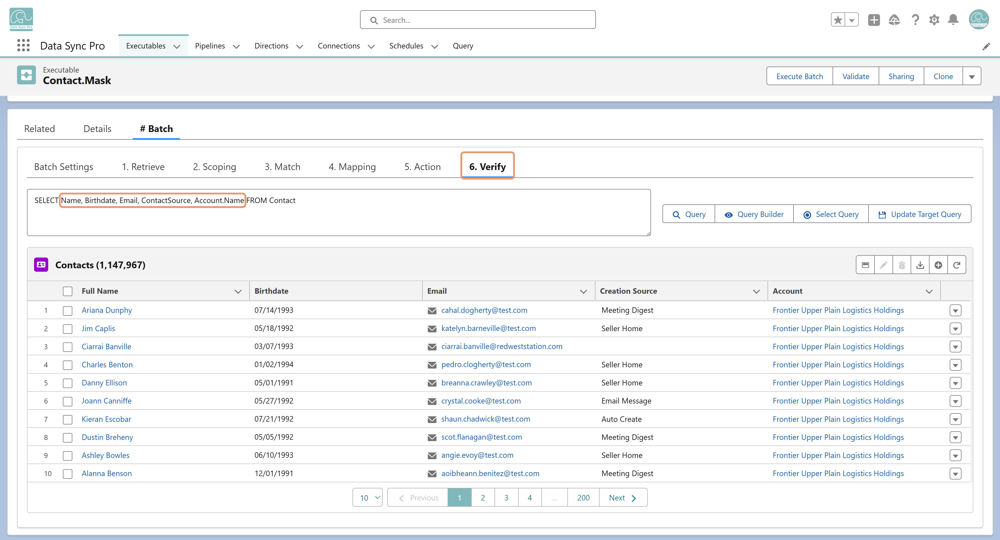
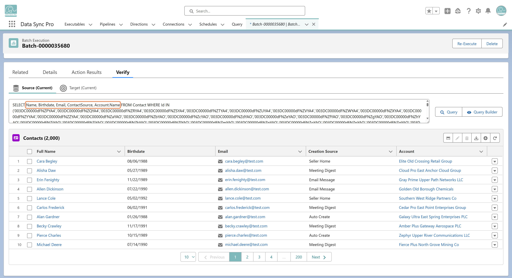

Verify (available only in #Batch) defines a query on the target object. After each Batch Execution, the batch log includes a Verify tab where DSP automatically queries and displays target records with the fields defined in the Executable's Verify step.
Verify is a built-in inspection step in #Batch that lets you query and review records on the target object — without leaving DSP. It runs at two levels:
Together, these views make it easy to validate logic during build, troubleshoot after a run, and audit results for compliance — all using familiar SOQL, directly inside DSP.

